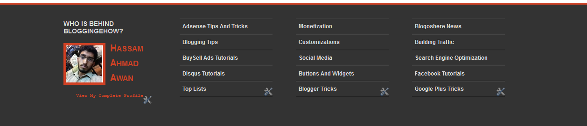
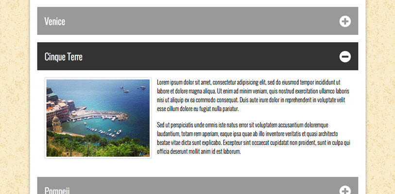

Nav Bar with Dropdown Menus
WHAT I HOPE TO PRACTICE/LEARN
I hope to have a better understanding of the use of floats in a large number of objects and how to apply clearfixes. I've had a lot of problems with that.
HOW THIS RELATES TO WHAT I HAVE/WILL LEARN IN WDD.
Adding dropdowns to a navigation menu has a great deal to do with WDD. A navigation bar is the user's main way to get around a website. Adding expanding menues also expands the user's options as far as places they can get to from where they are.
How I Would Build This
- 1Start with a
<nav> tag.
- 2Add a
<ul> inside the <nav> and remove the list-stlye-type.
- 3Inside the
<ul> add a <li> tag for each menu item and use styling to make them inline-block.
- 4Nest another
<ul> inside each menu item that should have a dropdown.
- 5Use pseudo classes in your stylesheet to make the sub
<ul> appear when the <li> are hovered over.
Tables
WHAT I HOPE TO PRACTICE/LEARN
I can make tables but I've always had problems with sizing the cells. I could never decide if I should size the table itself or just leave the table's size out of it and just size the cells and let it fall into place. It especially became hard for responsive design. I hope to clear all that up.
HOW THIS RELATES TO WHAT I HAVE/WILL LEARN IN WDD.
Tables aren't used nearly as much as they used to be in WDD. HTML and CSS used to be really underdeveloped and tables were the only option sometimes. But they're still used today in certain situations. Like when you need to make an actual table on your page for a schedule or something.
How I Would Build This
- 1Start with a
<table> tag.
- 2Add some
<tr> inside the <table> for however many rows you want in your table.
- 3Inside each
<tr> add <td> or <th> tags for each column in your table.<td> is data cells and <th> are heading cells.
Featured
Responsive Features List
WHAT I HOPE TO PRACTICE/LEARN
The dreaded clearfix. Clearfix is difficult in Bootstrap but in handwritten code it's even worse. I even noticed the instructor's version of this component wasn't perfect and needs a clearfix at a certain breakpoint.
HOW THIS RELATES TO WHAT I HAVE/WILL LEARN IN WDD.
A great deal of sites have componenets like this. It's usually for features or staff members. It changes a lot for different breakpoints in a responsive website.
How I Would Build This
- 1Start with a containing
<div> or <section> tag.
- 2Add some
<div>s inside the <section> to contain each feature.
- 3Inside each
<div> add an <img> and an <h?> tag for a header and finally a <p> for the description.
How I would style this
I would give each <div> a percentage width and a padding to fit. Probably 20px. All items inside the <div> would be block to remain vertical. When in smaller breakpoints the shame would change entirely so that the picture would change to inline-block and the next next to it would remain block. This would give the resule you see in the smartphone portion of the picture above.

Footer
WHAT I HOPE TO PRACTICE/LEARN
I don't have trouble with regular footers with just copyright information but when they have columns of unordered lists and maybe even a logo. I've never been able to structure those right, especially for a responsive design. I'm hoping to study harder on that.
HOW THIS RELATES TO WHAT I HAVE/WILL LEARN IN WDD.
This is really common with sites for law firms or medical centers. But there are a lot of other types of sites that use a footer like this.
How I Would Build This
- 1Start with a
<footer> tag to put everything in.
- 2Add three or four
<ul>s inside the <footer>. However many is needed.
- 3Inside each
<ul> add a bunch of <li>.
- 3 Make the
<ul>s <inline-block> so they're next to each other in the <footer>.

Footer
Accordion
Accordions are difficult without Javascript but if you're a CSS magician, I guess it's possible. I'm not great at making accordions so learning a little more about making them without cheating with jQuery UI would be great.
HOW THIS RELATES TO WHAT I HAVE/WILL LEARN IN WDD.
Just about every kind of site out there uses accordions to get information across.
How I Would Build This
- 1Start with a
<div> or <section> tag to put everything in.
- 2Put a
<h?> and a <p> inside a <div> for each entry in the accordion. However many is needed.
- 3 Use jQuery to animate the
<p>s whenever a <h?> is clicked.